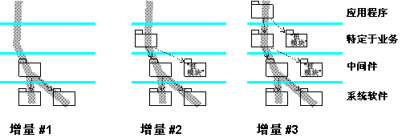

|
当此项任务开始时，已经交付了实施子系统，来满足在工作产品：集成构建计划中描述的下一个（“目标”）工作版本的需求；集成构建计划中可能定义了在一个迭代中需要产生若干个工作版本。根据要集成的子系统的复杂性和数量，分几个步骤产生目标工作版本通常更高效，在每一步中添加更多的子系统并产生一系列中间“微型”工作版本
－
这样，为迭代计划的每个工作版本可依次拥有自己的一系列临时中间工作版本。这些工作版本服从最小限度的集成测试（通常是在此目标工作版本的集成构建计划中描述的测试的子集），以确保添加的子系统与系统集成工作空间中已存在的子系统相兼容。使用此方法，应该更容易隔离和诊断问题。
在解决任何合并冲突的流程中，集成人员对交付的子系统递增地进行验收并放入系统集成工作空间。对于分层结构，建议以自下而上的方式进行，在考虑导入的情况下，确保子系统版本是一致的。
编译子系统增量并链接到中间工作版本，然后将该工作版本提供给测试人员，来执行最小限度的系统集成测试。

此图显示了用三个增量产生的工作版本。某些子系统只需用作桩模块，以使编译和链接其他子系统成为可能，并提供基本的最小限度的运行时行为。
最后的一系列增量产生目标工作版本，正如集成构建计划中所计划的。当对此工作版本完成最小限度的测试时，就为此工作版本创建了初始或临时基线 － 调用在“配置管理”规程中 任务：创建基线。
现在，此工作版本可用于测试人员来完成系统测试。此测试的性质和深度将与集成构建计划中计划的一致，迭代的最终工作版本服从迭代测试计划中定义的所有测试。 任务：创建基线。
现在，此工作版本可用于测试人员来完成系统测试。此测试的性质和深度将与集成构建计划中计划的一致，迭代的最终工作版本服从迭代测试计划中定义的所有测试。
|